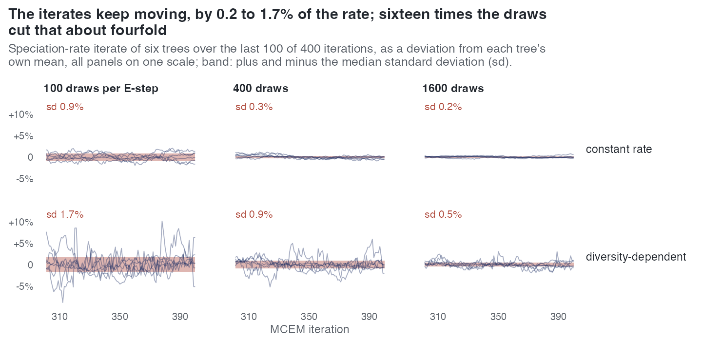

E13 — How long does MCEM take to settle, and how much does one iterate move?
| Status | complete; the draws arm has 6 trees per cell, not the designed 10 |
| Package build | library cur, installed at 373eec1 on 2026-09-24; the build audit puts that host's libraries at 373eec1 … f0dff93, identical to clean builds |
| Driver / analysis | sim/E13-settling.R, sim/E13-rates.R; figure sim/figures-study.R |
| Data | results/E13/settling-traces.csv (40 rows), settling-draws.csv (42), settling-rates.csv (42), traces/*.rds (42 traces of 401 iterations) |
Question
Two experiments had measured non-settling as a side effect: 16% of E8's fits converged inside 100 iterations, and E9's reference failed to settle inside 400 iterations on 16 of 40 trees. That conditions every other result, so E13 measures it directly. The design question: is settling slow in iterations or in draws? If more draws per iteration settle the trace in fewer iterations, the cost is Monte Carlo noise and a user should raise num_trees; if the iteration count does not move, the cost is the EM path and only patience helps.
Design
| arm | what | trees |
|---|---|---|
| traces | re-reads E9's 40 reference traces (400 iterations at 400 draws; cr and dd at 50 and 200 tips); no new compute |
10 per cell |
| draws | new reference-only fits (rel_change, tol = 0, never satisfied; 400 iterations) at 100, 400 and 1600 draws for cr and dd, plus ned at 400 draws |
designed 10 per cell; 6 on disk (k = 1-6 in every cell) |
| parameter (draws arm) | value |
|---|---|
| tips | about 100 (realised 61-156 cr, 78-100 dd, 71-116 ned) |
| generating rates | \(\beta\)0 = 0.5, turnover 0.25 (\(\gamma\)0 = 0.125), crown age 15, capacity calibrated to 100 tips |
ned effect |
\(\beta\)_ED = -0.15 \(\beta\)0 at the clade's ED scale |
| proposal, link, \(\rho\) | surrogate, linear, 1 |
| clock | 21 600 s (driver default) |
Settling criteria used: the iterate-scatter band (the first iteration from which the running mean stays within one iterate's scatter of the settled value); a relative tolerance of 1% and 2% of the settled value (introduced for the draws arm because a band from the iterates' own scatter tightens as draws grow, about fourfold from 100 to 1600 draws, so it is stricter exactly where the estimate is more precise); and, in the adversarial review, a plateau (every later iterate within 2%).
Pre-set rule
Descriptive: the median settling iteration and settling draw count per cell. The paper may then state whichever the data support, as the measured scaling: if settling iterations fall roughly as the draw count rises, the cost is noise; if not, it is the path.
Results
Settling, draws arm (trees with a settling point, of 6; median iteration):
| cell | iterate-scatter band | within 1% | within 2% |
|---|---|---|---|
cr, 100 draws |
4 (123) | 0 | 0 |
cr, 400 |
2 (197, 241) | 3 (55, 202, 321) | 4 |
cr, 1600 |
1 (79) | 2 (61, 87) | 4 |
dd, 100 |
4 (168) | 0 | 0 |
dd, 400 |
6 (231) | 0 | 0 |
dd, 1600 |
1 (16) | 0 | 0 |
ned, 400 |
5 (309) | 0 | 0 |
Every fit ran to the 400-iteration cap, as designed. Traces arm (E9's references, settle found of 10; median iteration; median cumulative draws): cr 200 tips 7 (143; 57 200), cr 50 tips 6 (264; 105 600), dd 200 tips 4 (191; 76 400), dd 50 tips 7 (116; 46 372). 16 of 40 references do not settle inside 400 iterations under any criterion. Under the plateau criterion 0 of 6 settle in every cell except cr at 1600 draws. An earlier reading that "dd settles at iteration 7" was withdrawn: the running mean fired mid-transient while the trace was still rising from 0.04 to 0.10.
The noise floor, which depends on no criterion. Standard deviation of the speciation-intercept iterate over the last 100 of 400 iterations, as % of its own mean, median over the 6 trees: cr 0.89 / 0.29 / 0.18% at 100 / 400 / 1600 draws; dd 1.73 / 0.88 / 0.47%; ned 1.36% at 400. A fourfold increase in draws divides it by 1.6 to 3.1. A second measure, the coefficient of variation of the rates at the clade's own diversity (E13-rates.R, report table):
| model | draws | CV of \(\lambda\)(N) | CV of \(\mu\)(N) |
|---|---|---|---|
cr |
100 / 400 / 1600 | 0.9 / 0.3 / 0.2% | 6.7 / 3.0 / 1.9% |
dd |
100 / 400 / 1600 | 3.0 / 1.8 / 1.0% | 5.4 / 2.7 / 1.4% |
ned |
400 | 4.2% | 6.4% |
The two measures differ for dd (1.7 / 0.9 / 0.5% against 3.0 / 1.8 / 1.0%) because \(\lambda\)(N) includes the \(\beta\)N·N term. Extinction carries 2 to 7 times the noise of speciation.

cr, 1.7 → 0.5% under dd).Conclusion
Under the descriptive rule: the noise side is answered — per-iterate noise falls with the draws roughly as 1/√draws (1-7% across rates and models, extinction the larger), so the cost of a tight answer is noise and the lever is num_trees. The settling-iteration side is not answered as a scaling: the counts and medians above do not form a monotone series in the draws, and each criterion moves the answer by up to an order of magnitude, because each is either tighter than the per-iterate noise or fires mid-transient. An iterate does not settle on a point; any stopping rule tighter than the floor cannot fire, which is why the shipped mc_error rule compares the step with its own Monte Carlo error (E9), and a user taking the last iterate inherits this noise whatever the iteration count. The 6-tree cells make the medians coarse; the design's 10 were not run.